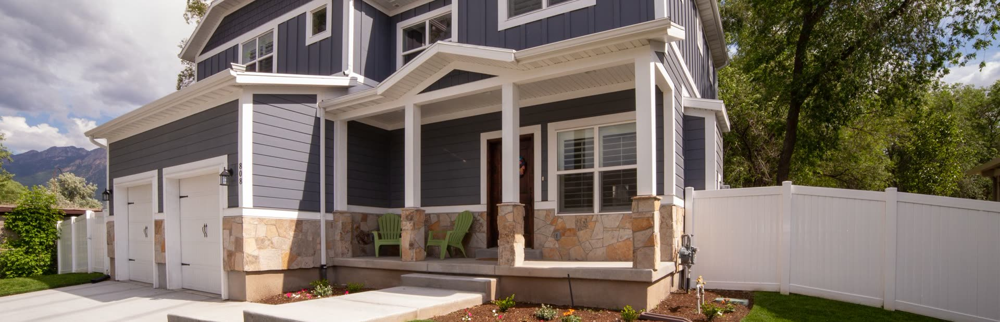
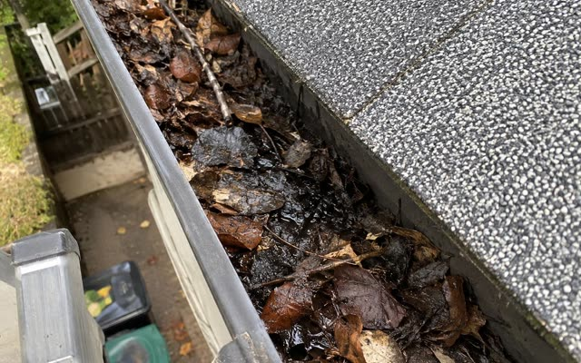
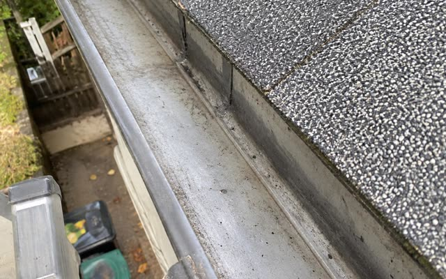
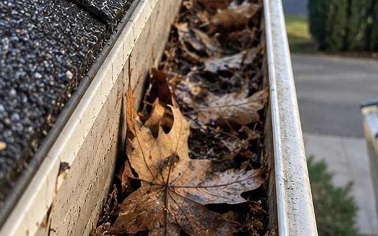
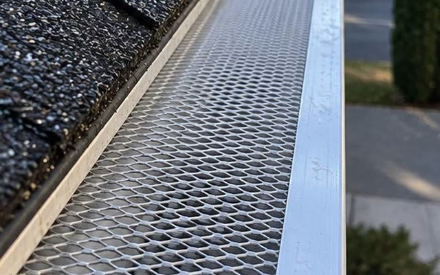
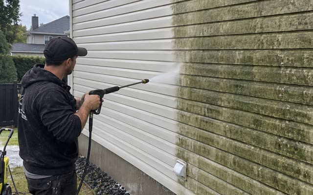

Nettoyage de gouttières et entretien extérieur à Sherrington
Groupe Murco est basé à Sherrington. C'est notre village : nous y travaillons toute la saison et nous connaissons les maisons du secteur, souvent entourées d'arbres matures qui remplissent les gouttières chaque automne.
Du toit jusqu'au terrain
Basés ici, nous pouvons souvent passer la même semaine.


Avant → aprèsNettoyage de gouttières
Nous vidons les feuilles, retirons la boue et rinçons les descentes pour que l'eau s'écoule avant l'hiver.
Dès 200 $ Voir le détail

Avant → aprèsProtège-gouttières
Grillage en aluminium posé sur vos gouttières existantes pour limiter l'accumulation de feuilles.
Dès 650 $ Voir le détail
▶ En actionLavage à pression du revêtement
Vinyle, aluminium ou brique : nous enlevons la moisissure, le vert et la saleté accumulés.
Dès 250 $ Voir le détail ▶ En actionLavage de vitres extérieures
Fenêtres du rez-de-chaussée jusqu'au 3e étage, sans que vous ayez à sortir l'échelle.
Dès 150 $ Voir le détail ▶ En actionRamassage de feuilles et fermeture de terrain
Ratissage, soufflage et ramassage pour maisons, blocs appartements et petits commerces.
Dès 175 $ Voir le détailVous êtes à Sherrington?
Dites-nous ce qu'il y a à faire, nous vous revenons avec un prix écrit.
Une gouttière avant et après
Le même travail que nous faisons à Sherrington : feuilles et boue retirées, rinçage jusqu'aux descentes.


Glissez la poignée pour comparer. Photo d'une de nos jobs.
Questions fréquentes à Sherrington
Vous déplacez-vous partout à Sherrington?
Oui. Nous travaillons partout à Sherrington et dans les environs, pour les maisons, les plex, les blocs appartements et les petits commerces.
Quand faire nettoyer ses gouttières à Sherrington?
Idéalement à la fin de l'automne, une fois les feuilles tombées et avant le gel. Si votre terrain est boisé, un deuxième passage au printemps évite les débordements à la fonte des neiges.
Combien coûte un nettoyage de gouttières à Sherrington?
Le prix est calculé au pied linéaire de gouttière et dépend de la hauteur de la maison. Vous recevez une soumission écrite et gratuite avant les travaux, sans surprise sur la facture.
Pouvez-vous faire plusieurs services dans la même visite?
Oui. Gouttières, protège-gouttières, lavage à pression, vitres et feuilles peuvent être combinés en un seul déplacement, sur une seule soumission.
Les autres villes que nous desservons

Parlons de votre maison.
Décrivez-nous le travail, nous vous revenons avec un prix écrit.